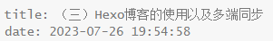
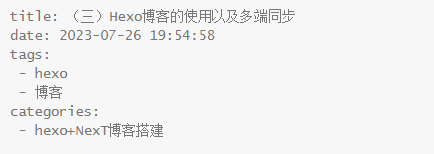
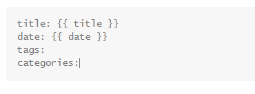
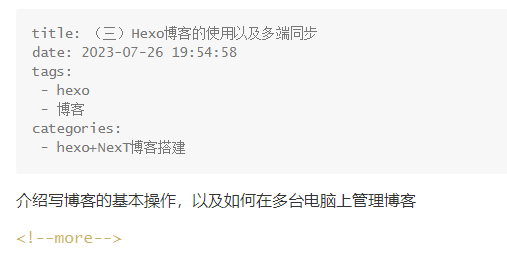
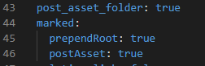
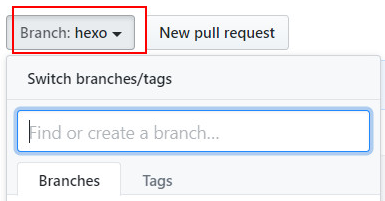
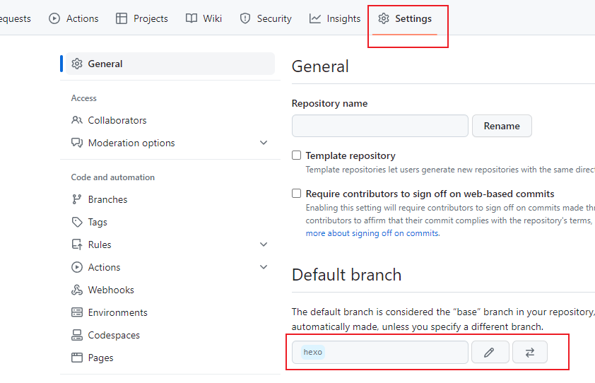

（三）Hexo博客的使用以及多端管理
1、发表博客
1.1、基本流程
使用命令hexo n 博客文件名，就会在站点根目录/source/_posts
下创建 博客文件名.md
文件，打开该文件，会发现开头有内容了

博客标题title默认和文件名一样，可以修改。
写好后一般依次执行以下命令：
1 | hexo clean |
过几分钟就能看到网站上有该博客了
创建本地博客文件也可以不使用命令hexo n 博客文件名，直接在站点根目录/source/_posts
下新建.md文件，也会被识别到。
如果文件多了也可以在站点根目录/source/_posts下新建文件夹管理，我习惯把不同分类的博客放不同文件夹。
根据这段时间搭建博客经验，hexo是通过浏览站点根目录/source/_posts下所有的文件夹和文件，只要是.md文件，就会被认为是博客。
2.2、添加分类和标签
在开头添加如下内容：（展示的就是这篇博客的开头）

一个博客可以有多个tag，分类也可以有多级
1 | categories: |
使用命令创建博客的时候没有自动添加categories。打开站点根目录\scaffolds\post.md，修改如下

使用命令创建博客的时候就会自动增加categories:
2.3、添加摘要
只针对next主题
文章中使用<!-- more -->分割为两部分，之上的为摘要。博客主页默认显示的是博客的摘要。若没有摘要，主页则显示博客所有内容

2.4、插入图片
参考资料：资源文件夹
官网给了几种方法，我比较喜欢使用相对路径的方法
打开站点根目录/_config.yml
，修改：post_assets_folder: true，然后在该行下面添加
1 | marked: |

之后使用 hexo n title
新建博客后，在source/_posts
路径下会多添加一个叫和博客文件同名的文件夹（前面使用的"title"，这里文件夹就为title），把博客要用的图片放在该文件夹内，例如放入图片image.png，要在博客中使用该图片，使用以下语法
1 |  |
2、多端管理
参考资料：Hexo在多台电脑上提交和更新
上面的资料比较详细，我这里只说一下步骤（和资料不完全一样）。
原本是在台式机搭建的博客，在笔记本上也想管理我的博客。我们称原始搭建博客的电脑为老电脑，另一个为新电脑
老电脑操作
在之前部署博客创建的GitHub仓库中新建分支，命名为hexo。打开仓库：

输入hexo，点击create。
设置hexo分支为默认分支。（不会影响部署博客）

任意创建一个文件夹，在该文件夹下右键打开git bash，输入：
1 | git clone git@github.com:username/username.github.io.git |
将下载的文件夹里的.git 文件夹复制粘贴到站点根目录下，删除主题根目录下的.git文件夹（没有就不用管）。
注意：站点根目录下应该有个.gitignore文件，用来忽略一些不需要的文件，表示这些类型文件不需要git。如果没有，右键新建，我的.gitignore文件里的内容如下
1 | .DS_Store |
站点根目录下打开git bash依次使用以下三条命令：
1 | git add . |
git add .：这个命令用于将当前目录（包括子目录）中的所有更改添加到下一次提交中。当您在 Git 仓库中进行更改时，这些更改一开始都被视为"未暂存"。使用git add .命令，您告诉 Git 将所有更改添加到暂存区（也称为"索引"），准备好进行下一次提交。
git commit –m add_branch： 这个命令用于创建一个提交，并将暂存区中的所有更改作为一个单元保存到版本历史中。-m参数后面的 "add_branch" 是提交的消息或注释，用于简要描述此次提交所做的更改。在实际使用时，您可以根据实际情况提供更具描述性的提交消息。
git push： 这个命令用于将本地的提交推送到远程仓库。在团队协作中，当您完成一些工作并创建了一个或多个提交后，您可以使用git push命令将这些提交上传到共享的远程仓库，以便其他团队成员也可以看到您的更改。
解释来自chatGPT
此时已经成功将整个网站推送到了远程库的默认分支hexo
新电脑操作
安装Git和nodejs
在Git Bash中输入以下两条，关联GitHub账号：
1 | git config --global user.name "你的GitHub用户名" |
然后创建SSH，输入指令后需要按几次回车
1 | ssh-keygen -t rsa -C "输入你的邮箱" |
如（一）hexo的初步生成与部署的 “5、免费部署到GitHub” 中，添加新的SSH Key。
创建一个文件夹，作为新电脑存放站点根目录的地方，克隆hexo分支到该文件夹
再该文件夹下打开git bash，输入：
1 | git clone git@github.com:username/username.github.io.git |
文件夹中就会出现 “username.github.io” 文件夹。
继续依次输入：
1 | npm install hexo-cli -g |
文件中会初始化一个blog文件夹，只保留该文件夹内的node_modules文件夹，其他的都删除。
将“username.github.io”文件夹内的所有内容复制到blog文件夹下。
运行
1 | npm install |
blog文件夹就是新电脑的站点根目录。
同步
推荐后续在换设备写博客前，可以先打开Git
bash执行git pull同步，再编写博客。
不管是否换设备，编写修改了文件后最好执行以下命令，将更改的文件上传
1 | git add . |
将修改的文件上传到GitHub
chatGPT：
git pull的目的是从远程仓库获取最新的更新，并尝试将这些更新合并到您当前的本地分支中，以便您的本地分支与远程分支保持同步。如果您在执行
git pull前有未提交的更改，Git 会尝试在合并更新之前先处理这些未提交的更改。这是为了确保在合并时不会覆盖您本地的工作或引起冲突。下面是执行git pull前存在未提交更改的情况下可能发生的情况：
自动合并： 如果您的本地修改与远程分支的更新没有冲突，Git 会尝试自动合并更新。它会先将您的未提交更改暂时存储起来（通常称为"stash"），然后将远程分支的更新合并到您当前的分支上。最后，Git 会尝试将之前暂存的未提交更改再次应用到合并后的代码上。
合并冲突： 如果您的本地修改与远程分支的更新产生冲突，Git 将无法自动合并。在这种情况下，
git pull操作会被中止，并且会在终端输出冲突的文件和位置。您需要手动解决这些冲突。解决冲突的过程需要打开冲突文件，查看并编辑其中的代码，以选择保留哪些更改或者如何合并这些更改。解决冲突后，您需要使用
git add命令将解决后的文件标记为已解决冲突状态，并使用git commit提交这次合并的结果。拒绝合并： 在某些情况下，如果您的本地修改与远程分支的更新有潜在的不兼容性，Git 可能会拒绝合并操作，并给出相应的错误提示。在这种情况下，您需要先处理本地的修改，例如，提交或者撤销您的更改，然后再执行
git pull。